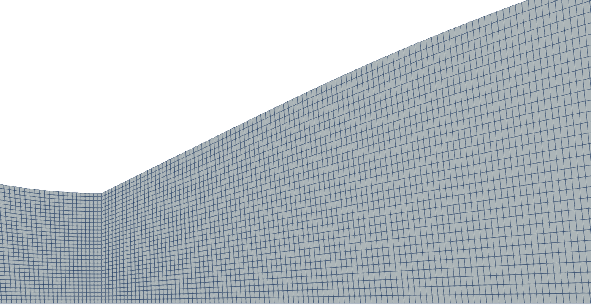
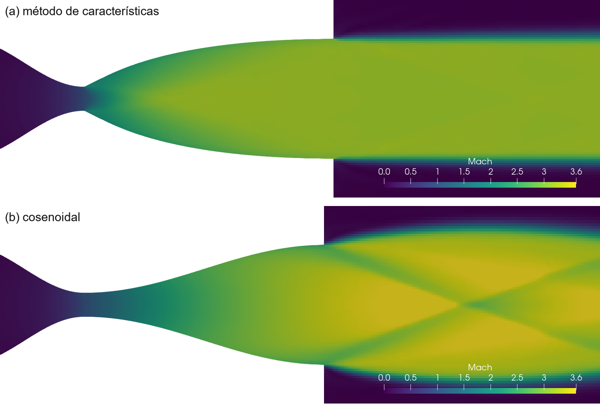
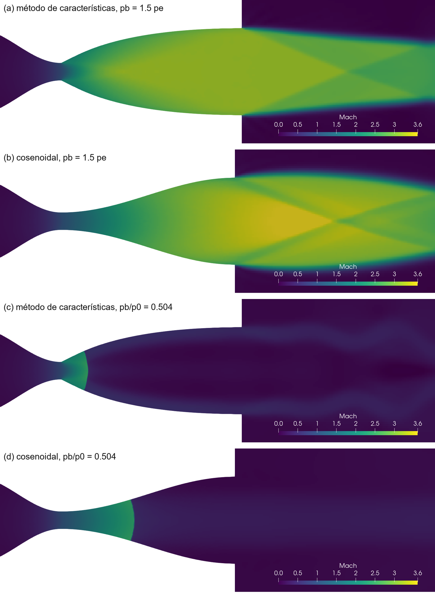

The cosine nozzle of the series delivers the design Mach number only on average. A short script draws the wall with the method of characteristics so that every expansion wave from the throat is cancelled, and the exit comes out nearly uniform. The same cases as tutorials 1.2 and 1.3 show what that buys and what it costs.
OpenFOAM · Flujo compresible · Tutorial 1.5
La tobera de método de características
La tobera cosenoidal de la serie entrega el Mach de diseño sólo en promedio. Un guion corto traza la pared con el método de características para que cada onda de expansión de la garganta se cancele, y la salida queda casi uniforme. Los mismos casos de la 1.2 y la 1.3 muestran lo que eso gana y lo que cuesta.
OpenFOAM · Kompressible Strömung · Tutorial 1.5
Die Düse nach dem Charakteristikenverfahren
Die Kosinusdüse der Reihe liefert die Auslegungs-Machzahl nur im Mittel. Ein kurzes Skript zeichnet die Wand mit dem Charakteristikenverfahren so, dass jede Expansionswelle aus der Kehle ausgelöscht wird, und der Austritt wird nahezu gleichförmig. Dieselben Fälle wie in 1.2 und 1.3 zeigen, was das bringt und was es kostet.
Estimated reading: 60 min (105 min of computing)Lectura estimada: 60 min (105 min de cálculo)Lesedauer: ca. 60 min (105 min Rechenzeit)Level: undergraduateNivel: licenciaturaNiveau: BachelorVerified on OpenFOAM 12 (blueCFD-Core 2024), Gmsh 4.15.2 and ParaView 5.11.2Verificado en OpenFOAM 12 (blueCFD-Core 2024), Gmsh 4.15.2 y ParaView 5.11.2Geprüft mit OpenFOAM 12 (blueCFD-Core 2024), Gmsh 4.15.2 und ParaView 5.11.2
Full English translation in preparation. Each section below carries a summary of its content; the complete text, figures and tables are available in the Spanish version, which the ES button above selects.
Explain what characteristics are and why a wall shaped by them cancels the expansion waves; run a short script that designs a minimum-length nozzle; compare its exit with the cosine nozzle of the series; and say what the design does not fix.
The problem
What is simulated
The nozzle of tutorials 1.2 to 1.4 (A_e/A_t = 5, design Mach 3.175) with a new diverging part drawn by moc.py: 4.162 m long, 26.5° at the throat corner, and the same convergent, ambient and boundaries.
The theory
Characteristics and the minimum-length nozzle
In 2D supersonic flow θ ∓ ν is constant along the two families of characteristics. A sharp throat turning the wall by ν_e/2 = 26.51° creates a fan; each wave reflects on the axis, and the wall is bent where it arrives so that it does not reflect again: the exit is uniform at the design Mach number.
Step by step
A contour and six cases
python3 moc.py writes contorno_moc.geo; ./Allrun moc PB or ./Allrun coseno PB runs either nozzle with the ambient; python3 validar.py measures the exit and the lip waves. Six cases, about 105 minutes in all on one core each.
The case
The case, file by file
moc.py in four parts (isentropic relations, the net, the wall and the resampling at equal arc length), the contour that tobera.geo reads with contorno = 1, and the sampling lines that the Allrun now places from each exit.
Results
The two nozzles in ParaView
The Mach field of both nozzles in one image for three ambient pressures: at design, the method-of-characteristics jet leaves clean and the cosine jet carries its waves.
Worked example
Method of characteristics against cosine
At design the exit Mach number goes from 3.07 to 3.17 (cosine: 2.63 to 3.38) and the flow angle stays under 0.3° (cosine: 7.5°). The lip shock at p_b = 1.5 p_e is 22.3° against 22.1° from the design state; with the cosine nozzle there is a fan instead. The mesh study extrapolates the mean Mach number to 3.177 against 3.175.
The cost
What the design does not fix
A 4 % longer nozzle; more total-pressure loss in the core from the sharp throat; no benefit off design (the internal shock follows quasi-1D in both); and no boundary layer, which tutorial 1.4 showed changes everything when the shock is inside.
Common errors
What goes wrong, and what OpenFOAM says
Running the Allrun before moc.py; too few waves; reading the cosine nozzle with the design state; and expecting the design to help off design.
Suggested exercise
Fewer waves, another area ratio, a stronger shock
Converge the contour with the number of waves, design the nozzle for A_e/A_t = 3 and check the throat angle by hand, and measure the lip shock at p_b = 2.4 p_e.
Appendix
A three-wave net by hand
The three-wave net point by point, as moc.py computes it, and the first wall point by hand.
Sources
References
Anderson's Modern Compressible Flow (chapter 11) and NACA Report 1135 for the theory; Fritsch and Carlson for the interpolation; the OpenFOAM 12 sources, the Kurganov-Tadmor paper and SU2 for the numerics.
Objetivos de aprendizaje
Qué se debe poder hacer al terminar
Las cuatro guías anteriores usaron la misma tobera cosenoidal, y la 1.3 mostró su límite: la salida no es uniforme, y en el labio el gas no tiene el estado que promete la razón de áreas. Esta guía traza el divergente con el método de características, de modo que cada onda de expansión que nace en la garganta se cancele al llegar a la pared, y compara las dos toberas en los mismos casos.
Explicar qué son las características de un flujo supersónico plano y qué se conserva a lo largo de ellas.
Explicar por qué una pared trazada con ellas cancela las ondas, y por qué la tobera de longitud mínima tiene una esquina en la garganta.
Correr un guion de Python que calcula el contorno y lo entrega a Gmsh.
Medir qué tan uniforme sale el chorro, y comparar las ondas del labio con la teoría de un solo estado en las dos toberas.
Decir qué no arregla el diseño: el costo en presión total, la longitud y lo que pasa fuera del punto de diseño.
Qué hace falta. Lo mismo que en la 1.3: blueCFD-Core 2024 (OpenFOAM 12 para Windows, con ParaView 5.11.2) y Gmsh 4.15.2 en C:\gmsh-4.15.2-Windows64. El caso es tobera-metodo-caracteristicas.zip. Conviene haber hecho la 1.3, de la que salen el dominio, las ondas del labio y validar.py, y la 1.1, de la que sale la función de Prandtl-Meyer.
El problema
Qué se va a simular
La tobera es la de la serie: plana, con \(A_e/A_t\) = 5, el mismo convergente y el mismo ambiente a la salida. Sólo cambia el divergente (figura 1). El cosenoidal sale de la garganta con la pared horizontal y se abre poco a poco; el nuevo sale de una esquina, abierto 26.5°, y regresa a la horizontal en la salida.
Figura 1.Los dos divergentes. La misma garganta y la misma salida. El de método de características sale de la garganta con 26.5° y gira de regreso a la horizontal; es 4 % más largo que el cosenoidal.
Dato
Valor
Dónde se fija
Razón de áreas
\(A_e/A_t\) = 5, con \(H_e\) = 1 m y \(H_t\) = 0.2 m
tobera.geo
Mach y presión de diseño
\(M_e\) = 3.1748, \(p_e/p_0\) = 0.020993
la razón de áreas
Divergente de método de características
4.162 m, con la pared a 26.51° en la garganta
moc.py → contorno_moc.geo
Divergente cosenoidal
4 m, con la pared horizontal en la garganta
tobera.geo
Malla
40 694 celdas (40 394 con el coseno), \(n_R\) = 30
nR
Modelo
Euler, shockFluid, gas normalizado con \(\gamma\) = 1.4
como en la 1.3
Presión del ambiente
\(p_b/p_0\), segundo argumento del Allrun
./Allrun CONTORNO PB
Tabla 1.Datos del caso. El convergente, el gas, el dominio exterior y las fronteras son los de la 1.3; sólo cambia el divergente.
Con \(A_e/A_t\) = 5, la razón de áreas promete en la salida \(M_e\) = 3.1748 y \(p_e/p_0\) = 0.020993, la presión de diseño de la 1.2. La cuasi-1D no dice cómo se reparte ese estado en la sección; la pared sí lo decide. La pregunta de esta guía: ¿qué tan uniforme sale el gas de una pared trazada para eso, y qué cuesta?
La teoría
Las características y la tobera de longitud mínima
Las características
En un flujo supersónico plano e isentrópico, las perturbaciones viajan por dos familias de líneas que forman el ángulo de Mach μ con la dirección del flujo θ. A lo largo de cada una se conserva una combinación del ángulo y de la función de Prandtl-Meyer de la 1.1:
Donde se cruzan una \(C_-\) y una \(C_+\), los dos valores que traen bastan para conocer θ y ν, y con ν, el Mach. Eso es el método de características: el campo se calcula punto por punto en los cruces, sin malla y sin ecuaciones diferenciales.
La tobera de longitud mínima
La forma más corta de acelerar el gas es expandirlo de una vez: la pared gira en la garganta un ángulo \(\theta_{max}\) y de ahí sale un abanico de Prandtl-Meyer. Cada onda del abanico llega al eje, que es un plano de simetría y la refleja; la reflejada cruza las demás y llega a la pared. Si la pared no hiciera nada, la onda se reflejaría otra vez hacia el eje. Para que no lo haga, la pared tiene que doblarse en ese punto justo lo que la onda gira al flujo (figura 2). Al salir del abanico, el gas del eje tiene que llegar al Mach de diseño con θ = 0, y como en el eje θ + ν se conserva desde la esquina, el ángulo de la esquina es la mitad de ν en la salida:
\[ \theta_{max} = \frac{\nu(M_e)}{2} \tag{3} \]
Con \(M_e\) = 3.1748, \(\nu_e\) = 53.02° y la pared sale de la garganta a 26.51°.
Figura 2.La red de características. Siete ondas de moc.py, a escala. Todas nacen en la esquina de la garganta; cada una se refleja en el eje, cruza las demás en el núcleo y llega a la pared, que se dobla justo lo necesario para que no se refleje. Con 200 ondas la pared es una curva suave.
La red, punto por punto
El abanico se divide en \(n\) ondas con ángulos \(\theta_j = j\,\theta_{max}/n\). En el punto donde la onda \(k\) se cruza con su \(m\)-ésima reflexión, los dos invariantes de la ecuación (2) dan:
Las posiciones salen de cruzar dos rectas, una \(C_+\) y una \(C_-\), con la pendiente promedio de sus dos extremos. En el eje θ = 0, y en la pared la pendiente es la del flujo que llega. El Apéndice hace la red de tres ondas a mano. moc.py hace lo mismo con 200.
Lo que la red supone. Que en la garganta el flujo es sónico y paralelo en toda la altura, y que la esquina es un punto. En la tobera real la línea sónica es curva y la esquina tiene el tamaño de una celda, así que la salida no será exactamente uniforme. Cuánto se aleja es lo que mide la guía.
Paso a paso
Un contorno y seis casos
Todo se hace en la terminal de blueCFD-Core, como en la 1.3. Cada caso va en su propia copia de la carpeta. La tobera nueva tarda un poco más que la cosenoidal: con el mismo número de Courant, su paso de tiempo es menor, 1.2 × 10⁻³ contra 1.9 × 10⁻³ al final.
Carpeta
Orden
Qué se espera
Tiempo
diseno-moc
./Allrun moc 0.020993
salida casi uniforme
18 min
diseno-cos
./Allrun coseno 0.020993
la salida de la 1.2 y la 1.3
14 min
choque-moc
./Allrun moc 0.0315
choque oblicuo en el labio
18 min
choque-cos
./Allrun coseno 0.0315
en el labio, un abanico
14 min
abanico-moc
./Allrun moc 0.0063
abanico en el labio
18 min
interno-moc
./Allrun moc 0.50362
choque normal dentro del divergente
18 min
Tabla 2.Los seis casos de la receta. Cada uno en su copia de la carpeta. Los tiempos son de la laptop de la serie, con un caso a la vez y un solo núcleo.
Descomprimir el caso en la carpeta Descargas: queda una carpeta tobera-metodo-caracteristicas con los archivos de la tabla 3.
Abrir la terminal y agregar Gmsh a la ruta de búsqueda:
export PATH="$PATH:/c/gmsh-4.15.2-Windows64"
Calcular el contorno, en la carpeta descargada, antes de copiarla:
cd /c/Users/ana/Downloads/tobera-metodo-caracteristicas
python3 moc.py
Responde en un par de segundos:
AR = 5: Mach de diseño 3.1748, ν_e = 53.02°; la pared sale de la garganta a 26.51°
200 ondas: la pared llega a x = 4.1617 con y = 0.9996 (He = 1: -0.035 %)
Divergente de 4.1617 m; ajuste en y 1.00044; pendiente de la pared en la salida 0.06°
Escrito contorno_moc.geo. Siguiente paso: ./Allrun moc PB
Los argumentos opcionales son \(A_e/A_t\) y el número de ondas: python3 moc.py es lo mismo que python3 moc.py 5 200. La sección El caso explica cada renglón.
Hacer una copia por caso en la carpeta de corridas, con el nombre de usuario de cada quien en lugar de ana; cada copia lleva su contorno_moc.geo:
Correr la presión de diseño con el contorno nuevo:
cd $FOAM_RUN/diseno-moc
./Allrun moc 0.020993
El primer argumento es el contorno, moc o coseno, y el segundo, \(p_b/p_0\). Responde, con la ruta completa en lugar de …:
Running gmshToFoam on …/diseno-moc
Running checkMesh on …/diseno-moc
Running setFields on …/diseno-moc
Running foamRun on …/diseno-moc
Running foamRun on …/diseno-moc
Running foamRun on …/diseno-moc
Running foamPostProcess on …/diseno-moc
Running foamPostProcess on …/diseno-moc
Terminado. Siguiente paso: python3 validar.py
Tardó 18 minutos.
Medirlo:
python3 validar.py
Responde:
Tobera de método de características, salida en x = 6.162 m; ambiente a pb = 0.020993 (pb/p_diseño = 1)
Sección de salida, x = 6.152 m
OpenFOAM diseño dif.
Mach medio (con el gasto) 3.1491 3.1748 -0.81 %
Mach, de y = 0 a 0.95 de 3.068 a 3.169
presión p/p0, de y = 0 a 0.95 de 0.0209 a 0.0219
ángulo del flujo, de y = 0 a 0.95 hasta 0.26°
presión total media (con el gasto) 0.9751 1.0000 -2.49 %
(junto a la pared, de y = 0.97 a 1, la presión total cae de 0.87 a 0.16: es la capa numérica de la
pared de deslizamiento; sin ella, la presión total media de la sección es 0.9843)
Ondas del labio
junto al labio (y = 0.95): p = 0.0219, M = 3.068, -0.1° hacia arriba
la teoría usa el estado de diseño: M = 3.1748, p = 0.020993, flujo paralelo al eje
pb es la presión de diseño: la teoría no pone onda en el labio. Lo que se ve ahí
responde a la diferencia entre pb y la presión junto al labio, +4 %.
La misma presión con la tobera cosenoidal, para comparar:
cd $FOAM_RUN/diseno-cos
./Allrun coseno 0.020993
python3 validar.py
Los otros cuatro casos, cada uno en su carpeta y con su orden de la tabla 2, y python3 validar.py al terminar.
Ver los resultados:paraFoam en la carpeta de cada caso (sección Resultados).
Para repetir un caso en la misma carpeta, primero ./Allclean, que conserva contorno_moc.geo. Sin argumentos, ./Allrun escribe cómo se usa.
Una terminal ocupada no olvida. Lo que se escribe en la terminal donde corre un Allrun no se pierde: se ejecuta cuando el guion termina. Para abrir ParaView o medir otro caso mientras uno calcula, hay que abrir otra terminal.
El caso
El caso, archivo por archivo
El caso es el de la 1.3 con tres cambios: el guion moc.py, la opción contorno de tobera.geo y las rectas de las ondas, que ahora empiezan en la salida de cada tobera.
Archivo
Qué es
moc.py
calcula el contorno con el método de características y escribe contorno_moc.geo
tobera.geo
el de la 1.3, que con contorno = 1 lee contorno_moc.geo
Allrun, Allclean
el guion, ./Allrun CONTORNO PB, y el que limpia la carpeta
validar.py
mide la sección de salida y las ondas del labio y las compara con la teoría
0.tobera/, constant/, solvers/
los de la 1.3: fronteras, gas y solucionador
system/ondas.plantilla
los muestreos; el Allrun los pone a partir de la salida de cada tobera
system/ejeMedio, presiones, setFieldsDict.tobera
los de la 1.3
Tabla 3.Los archivos de tobera-metodo-caracteristicas.zip. Lo que el Allrun genera lo borra ./Allclean, salvo contorno_moc.geo, que es de moc.py.
moc.py: la red
El guion sólo usa la biblioteca estándar de Python, como validar.py. Empieza con las relaciones isentrópicas: el Mach de la razón de áreas, la ecuación (1) y su inversa, que se resuelve por bisección. El corazón es la red de la ecuación (4):
P = {(0, k): (0.0, Ht) for k in range(1, n + 1)} # todas las ondas nacen en la esquina
for m in range(1, n + 1):
x0, y0 = P[(m - 1, m)] # punto del eje: C− desde P(m−1, m) hasta y = 0
s = math.tan(0.5 * (ang(m - 1, m, -1) + ang(m, m, -1)))
P[(m, m)] = (x0 - y0 / s, 0.0)
for k in range(m + 1, n + 1):
xa, ya = P[(m, k - 1)] # C+ desde el punto anterior
xb, yb = P[(m - 1, k)] # C− desde la reflexión anterior de la onda k
sp = math.tan(0.5 * (ang(m, k - 1, +1) + ang(m, k, +1)))
sm = math.tan(0.5 * (ang(m - 1, k, -1) + ang(m, k, -1)))
x = (yb - ya + sp * xa - sm * xb) / (sp - sm)
P[(m, k)] = (x, ya + sp * (x - xa))
P[(m, k)] es el punto donde la onda k se cruza con su reflexión número m. El primer punto de cada m está en el eje (y = 0); los demás, en el cruce de una \(C_+\) que viene del punto anterior y una \(C_-\) que viene de la reflexión anterior. ang devuelve θ ± μ en cada punto, y las pendientes son el promedio de sus dos extremos.
moc.py: la pared
W = [(0.0, Ht)] # la pared: cada C+ de P(m, n) la alcanza
for m in range(1, n + 1):
xc, yc = P[(m, n)]
mu = math.asin(1 / mach_de_nu(th[n] + th[m]))
sp = math.tan((th[n] - th[m]) + mu)
sw = math.tan(0.5 * ((th[n] - th[m - 1]) + (th[n] - th[m]))) # la pared gira lo que gira el flujo
xw0, yw0 = W[-1]
x = (yw0 - yc + sp * xc - sw * xw0) / (sp - sw)
W.append((x, yw0 + sw * (x - xw0)))
Cada \(C_+\) que sale del último cruce de una onda corta a la pared, que viene del punto anterior con la pendiente promedio del flujo de los dos. El primer renglón de la respuesta de moc.py es la ecuación (3); el segundo dice cuánto le falta a la pared para llegar a \(H_e\) = 1: con 200 ondas, 0.035 %. Un ajuste en \(y\), el tercer renglón, la deja exacta.
moc.py: el remuestreo
Gmsh reparte los nodos de una Spline según el parámetro de la curva, no según su longitud. Si los puntos del contorno estuvieran a distancias desiguales (y lo están: la red los pone cerca de la garganta), las celdas también lo estarían. Por eso el guion interpola la pared con una cúbica monótona (Fritsch y Carlson, 1980) y escribe 401 puntos a pasos iguales de longitud de arco en contorno_moc.geo:
// Divergente de método de características de la tobera de longitud mínima (AR = 5, n = 200 ondas), de moc.py.
// Puntos a pasos iguales de longitud de arco; x medida desde la garganta.
xMOC[] = {0.00000000, 0.00957944, 0.01915987, …, 4.16172000};
yMOC[] = {0.20000000, 0.20478869, 0.20957597, …, 1.00000000};
tobera.geo
El archivo tobera.geo:
If (contorno == 1)
Include "contorno_moc.geo"; // xMOC[], yMOC[]: el divergente de longitud mínima, de moc.py
Ld = xMOC[#xMOC[] - 1]; // la longitud la da el contorno
EndIf
Con contorno = 1, Gmsh lee los dos arreglos y la longitud del divergente sale del último punto; el Allrun pasa -setnumber contorno 1 con moc y 0 con coseno. Lo demás de la malla es igual: la misma cantidad de celdas en \(y\) y las mismas progresiones, y por eso las dos mallas tienen casi el mismo número de celdas (tabla 1).

Figura 3.La malla en la garganta. De \(x\) ≈ 1.8 a 2.9 m. A la izquierda, el convergente cosenoidal; en la esquina, la pared gira bruscamente 26.5°, y las celdas del divergente siguen al contorno de contorno_moc.geo.
Las rectas de las ondas
En la 1.3, system/ondas tenía sesenta rectas fijas desde \(x\) = 6.05. Con la tobera nueva la salida está en \(x\) = 6.162, y las tres primeras quedarían dentro de la tobera. Ahora el Allrun lee la posición de la salida en log.gmsh y escribe las rectas a partir de ella:
# las rectas de las ondas empiezan en la salida de la tobera, que depende del contorno
awk -v xe=$xe 'BEGIN {
printf " salida { type lineUniform; axis y; start (%.4f 0.0005 0.05); end (%.4f 0.9995 0.05); nPoints 400; }\n", xe - 0.01, xe - 0.01
for (k = 0; k < 60; k++) {
x = xe + 0.05 * (k + 1)
printf " x%03d { type lineUniform; axis y; start (%.4f 0.0005 0.05); end (%.4f 3 0.05); nPoints 1200; }\n", k, x, x
}
}' > system/lineas
sed -e '/^ LINEAS$/r system/lineas' -e '/^ LINEAS$/d' system/ondas.plantilla > system/ondas
rm system/lineas
La salida queda también en el archivo parametros, de donde la lee validar.py.
Cómo mide validar.py
La sección de salida es la recta salida, a 0.01 m de la salida. El Mach medio y la presión total media se ponderan con el gasto, \(\rho u\). El intervalo de Mach va del eje a \(y\) = 0.95: los últimos centímetros son la capa numérica de la pared de deslizamiento, que validar.py reporta aparte. Para las ondas, la teoría parte del estado de diseño, \(M_e\) y \(p_e\) con el flujo paralelo al eje, y las ondas se miden como en la 1.3. Si el eje es subsónico en la salida, el choque entró a la tobera, y validar.py compara su posición con la cuasi-1D de la 1.2.
Resultados
Las dos toberas en ParaView
Cada tobera se ve en su propia ventana. ParaView se abre con paraFoam en la carpeta del caso, como en la 1.3: Apply, el último tiempo, la vista −Z y el campo Ma. El cálculo es de media tobera, del eje a la pared; para verla completa se le aplica Filters ▸ Alphabetical ▸ Reflect, con Plane en Y Min y Copy Input marcado, como viene. Con la misma escala de color en todos los casos, de 0 a 3.6 (Rescale to Custom Range), las imágenes se pueden comparar entre sí (figuras 4 y 5).

Figura 4.Las dos toberas, con la presión de diseño. Número de Mach del último tiempo de diseno-moc (a) y diseno-cos (b), cada tobera completa (reflejada sobre el eje) y con la misma escala.
Con la presión de diseño, el chorro de método de características (a) sale casi del mismo color en toda la altura, y sigue así: no hay ondas que reflejar. El cosenoidal (b) trae dentro el Mach más alto en el eje y el más bajo junto a la pared, y afuera esa diferencia se arregla con ondas que se cruzan en el eje cerca de \(x\) = 8 m.

Figura 5.Fuera del diseño. Número de Mach del último tiempo, con la misma escala que la figura 4: \(p_b\) = 1.5 \(p_e\) con el método de características (a) y con el coseno (b), y \(p_b/p_0\) = 0.504, con el choque adentro, en las dos (c, d).
Con \(p_b\) = 1.5 \(p_e\), del labio de la tobera nueva sale un choque recto (a); del de la cosenoidal, un abanico (b) (sección Ejemplo resuelto). Con \(p_b/p_0\) = 0.504 el choque está dentro de las dos toberas, cada una en su lugar (c, d). Para distinguir las ondas del labio conviene acercarse a él y acotar la escala a 2.4–3.6: fuera del chorro todo queda de un color, y dentro se ven el choque y el abanico.
Ejemplo resuelto
Método de características contra coseno
Enunciado: con diseno-moc y diseno-cos, comparar la sección de salida de las dos toberas con el estado de diseño; con choque-moc, abanico-moc y choque-cos, comparar las ondas del labio con la teoría de un solo estado; y comprobar con tres mallas que la diferencia no es numérica.
1. La sección de salida
Cifra
Método de características
Coseno
Diseño
Mach medio, con el gasto
3.1491
3.1302
3.1748
Mach
3.07 a 3.17
2.63 a 3.38
uniforme
Presión \(p/p_0\)
0.0209 a 0.0219
0.0154 a 0.0446
0.0210
Ángulo del flujo, máximo
0.26°
7.50°
0°
Presión total media
0.9751
0.9823
1
Presión total media, sin la capa
0.9843
0.9961
1
Longitud del divergente
4.162 m
4 m
—
Tabla 4.Las dos salidas con la presión de diseño. Lo que responde validar.py en diseno-moc y diseno-cos, en la sección a 0.01 m de la salida. Los intervalos van del eje a \(y\) = 0.95; la presión total «sin la capa» deja fuera la franja de \(y\) = 0.97 a 1, junto a la pared.
Figura 6.La salida casi uniforme. Mach promediado en el tiempo en la sección a 0.01 m de la salida de diseno-moc y diseno-cos. La caída de los últimos centímetros, en las dos, es la capa numérica de la pared.
El Mach de la tobera nueva va de 3.07 a 3.17 del eje a \(y\) = 0.95; el de la cosenoidal, de 2.63 a 3.38 (tabla 4, figura 6). El ángulo del flujo baja de 7.5° a 0.26°: el gas sale paralelo al eje, como pide la ecuación (3). El Mach medio queda 0.8 % debajo del de diseño, y la sección 4 muestra que ese resto es de la malla.
El eje cuenta lo mismo de otra manera (figura 7). En la tobera nueva el Mach del eje llega al de diseño dentro de la tobera y ya casi no cambia; en la cosenoidal sigue subiendo hasta la salida, y afuera, todavía más.
Figura 7.El eje de las dos toberas. Mach medio en el eje con la presión de diseño. El de método de características tiene su máximo en \(x\) = 4.2 m, 3.191, apenas arriba del de diseño, y lo conserva en el chorro: 3.158 en \(x\) = 8 m. El cosenoidal sigue acelerando hasta la salida, 3.38, y afuera llega a 3.76 antes de que lo frene la primera reflexión.
2. Las ondas del labio
Caso
\(p_b/p_e\)
Onda
OpenFOAM
Teoría
Diferencia
choque-moc
1.5
β del choque
22.3°
22.1°
+0.2°
moc 0.0504
2.4
β del choque
28.6°
27.9°
+0.7°
abanico-moc
0.3
cabeza del abanico
18.3°
18.4°
−0.1°
choque-cos
1.5
cabeza del abanico (teoría: choque de 22.1°)
19.4°
21.5°
−2.1°
Tabla 5.Las ondas del labio contra la teoría con el estado de diseño. Lo que responde validar.py. La teoría parte del estado que promete la razón de áreas: \(M_e\) = 3.175, \(p_e\) y el flujo paralelo al eje. En choque-cos esa teoría da un choque, pero en el labio hay un abanico: se compara con el estado medido junto al labio.
Con la tobera nueva la teoría de un solo estado funciona: β del choque a +0.2° y +0.7° de la teoría, y la cabeza del abanico a −0.1° (tabla 5). Son los errores de la 1.3 con el chorro uniforme, que no tenía tobera: la tobera de método de características es un chorro uniforme para lo que pasa afuera.
Con la cosenoidal pasa algo que la teoría ni siquiera anticipa. Con \(p_b\) = 1.5 \(p_e\) la tobera está sobreexpandida, y la teoría pone un choque de 22.1° en el labio. Pero junto al labio la presión de la cosenoidal es 0.0446, más del doble de la de diseño (figura 8), y el ambiente queda por debajo: sale un abanico, y su cabeza está a −2.1° de la que da el estado medido junto al labio, como en la 1.3. Sobreexpandida o subexpandida depende de dónde se mire. Con la tobera nueva no: la presión es casi la misma en toda la salida.
Figura 8.Lo que el ambiente encuentra en el labio. Presión de la misma sección. Con el coseno la presión junto al labio duplica la de diseño: un ambiente a 1.5 \(p_e\) queda por debajo de ella, y en el labio hay un abanico aunque el núcleo esté sobreexpandido.
3. ¿Y la presión de diseño?
Con \(p_b = p_e\) la teoría no pone ninguna onda en el labio. validar.py lo dice y reporta la diferencia que queda entre \(p_b\) y la presión junto al labio: +4 % con la tobera nueva, +112 % con la cosenoidal. Esa es la razón de que en la figura 4 un chorro salga limpio y el otro lleno de ondas.
4. La malla
Cifra
\(n_R\) = 15
\(n_R\) = 30
\(n_R\) = 60
Extrapolado
Celdas
16 851
40 694
106 239
—
Mach medio, con el gasto
3.1275
3.1491
3.1612
3.1766
Mach mínimo del núcleo
2.813
3.068
3.121
—
Ángulo del flujo, máximo
0.65°
0.26°
0.19°
—
Presión total media
0.9577
0.9751
0.9861
—
Presión total media, sin la capa
0.9688
0.9843
0.9898
0.9928
Tabla 6.Tres mallas del diseño. El caso diseno-moc con \(n_R\) = 15, 30 y 60 celdas en la semialtura de la salida (en \(x\) se refina igual). La última columna extrapola con Richardson a malla infinita; con SU2, en la misma malla de 30 y sin el ambiente, el Mach medio es 3.1705 y la presión total, 0.9953.
Figura 9.La salida con tres mallas. Con más celdas el núcleo sube hacia el Mach de diseño y la capa de la pared se angosta, pero la forma no cambia.
Con más celdas, el Mach medio sube de 3.1275 a 3.1491 y 3.1612, y la extrapolación de Richardson da 3.1766, a +0.06 % del diseño (tabla 6, figura 9). SU2, otro código, en la misma malla de \(n_R\) = 30 y sin el ambiente, da 3.1705. El contorno entrega el Mach de diseño; lo que falta con \(n_R\) = 30 es error de discretización.
Resultado: con la presión de diseño, el contorno de método de características deja la salida con Mach de 3.07 a 3.17 y el flujo paralelo al eje dentro de 0.26°, contra 2.63 a 3.38 y 7.5° de la cosenoidal. Las ondas del labio quedan a menos de 0.8° de la teoría de un solo estado, y el Mach medio extrapolado a malla infinita es el de diseño.
Lo que cuesta
Lo que el diseño no arregla
El diseño cumple en lo que promete. Esta sección es lo que no promete.
1. Es más larga
La tobera de longitud mínima es la más corta con salida uniforme, no la más corta posible: su divergente mide 4.162 m, 4 % más que el cosenoidal (figura 1). La cosenoidal es más corta porque no termina el trabajo: deja que la salida se arregle afuera.
2. La esquina cuesta presión total
Fuera de la capa de la pared, la presión total media de la salida es 0.9843 en la tobera nueva y 0.9961 en la cosenoidal (tabla 4). En un flujo isentrópico sería 1 en las dos. La pérdida de la tobera nueva nace en la esquina de la garganta, donde el abanico arranca de un punto y el esquema numérico lo resuelve con disipación. Con la malla baja (tabla 6): 0.9688, 0.9843 y 0.9898, con Richardson en 0.9928. SU2 da 0.9953 en la misma malla, sin el ambiente. Una parte, alrededor de medio punto, parece real; el resto es de la malla. En una tobera de verdad la esquina se redondea, justamente por eso.
3. Fuera del diseño no ayuda
Cifra
Método de características
Coseno
\(x\) del choque en el eje
2.636 m
3.716 m
\(x\) de la cuasi-1D, \(A/A_t\) = 2.5
2.638 m
3.678 m
Diferencia, en % del divergente
−0.05 %
+0.95 %
Presión total media en la salida
0.5526
0.5293
Tabla 7.El choque normal dentro de la tobera. \(p_b/p_0\) = 0.50362, la presión que en la cuasi-1D pone el choque donde \(A/A_t\) = 2.5. La posición es donde el Mach medio del eje baja de 1 después del máximo.
Figura 10.Con el choque adentro. Mach medio en el eje de interno-moc y del mismo caso con el coseno. Las líneas punteadas son la posición de la cuasi-1D, donde \(A/A_t\) = 2.5 en cada contorno.
Con \(p_b/p_0\) = 0.50362 el choque normal entra a las dos toberas, y en las dos queda a menos de 1 % del divergente de donde lo pone la cuasi-1D: 2.636 contra 2.638 m en la nueva y 3.716 contra 3.678 m en la cosenoidal (tabla 7, figura 10). El contorno no cambia el lugar: lo decide la razón de áreas. La presión total detrás del choque, que la cuasi-1D da en 0.522, sale 0.553 en la nueva, más lejos que en la cosenoidal (0.529): el choque cae en el núcleo de la red, donde las ondas todavía se cruzan y el flujo no es uniforme.
4. No hay capa límite
El cálculo es de Euler. La 1.4 mostró que con viscosidad la capa límite de la pared crece en el divergente y quita sección al flujo, y que con el choque adentro la capa se separa y cambia todo. Un diseño real corrige el contorno por el espesor de desplazamiento de la capa límite; este no lo hace.
Resultado: la salida uniforme cuesta 4 % de longitud y algo de presión total en la esquina de la garganta, y sólo vale en el punto de diseño. Con el choque adentro las dos toberas son iguales para la cuasi-1D.
Errores frecuentes
Qué sale mal y qué dice OpenFOAM
Los tres se reprodujeron en la laptop de la serie con este caso. Gmsh fuera de la ruta de búsqueda y correr el Allrun dos veces se resuelven como en la 1.2.
1. Correr el Allrun antes que moc.py
Sin contorno_moc.geo, Gmsh no tendría de dónde sacar la pared. El Allrun lo revisa antes de empezar:
Falta contorno_moc.geo: corra primero python3 moc.py
Remedio:python3 moc.py en la carpeta del caso. Si se copió la carpeta antes de correrlo, en cada copia.
2. Pocas ondas
Con python3 moc.py 5 20, el guion responde:
AR = 5: Mach de diseño 3.1748, ν_e = 53.02°; la pared sale de la garganta a 26.51°
20 ondas: la pared llega a x = 4.1408 con y = 0.9935 (He = 1: -0.646 %)
Divergente de 4.1408 m; ajuste en y 1.00815; pendiente de la pared en la salida 0.66°
Escrito contorno_moc.geo. Siguiente paso: ./Allrun moc PB
La pared queda 0.65 % corta, sale de la salida a 0.66° en lugar de horizontal, y es poligonal: cada una de las 20 ondas dobla la pared un ángulo de 1.33°. El ajuste en \(y\) la deja en \(H_e\) = 1, pero no le quita los quiebres. Remedio: las 200 ondas de omisión, con las que la pared llega a 0.035 % y a 0.06°. La práctica sugerida mide cómo converge.
3. Leer la cosenoidal con el estado de diseño
Con choque-cos, \(p_b = 1.5\,p_e\) dice «sobreexpandida», y con el estado de diseño la teoría pone un choque de 22.1° en el labio. Lo que sale es un abanico. validar.py lo detecta porque mira la presión junto al labio antes de decidir qué onda medir, y lo dice:
OpenFOAM teoría dif.
cabeza, con el estado junto al labio 19.4° 21.5° -2.2°
La teoría con el estado de diseño da un choque, pero junto al labio la presión es mayor que pb:
en el labio hay un abanico. Es la salida no uniforme del contorno.
(desviación del ajuste 0.008 m)
Remedio: con una salida no uniforme, el estado que decide la onda es el del labio, no el de diseño (1.3).
Práctica sugerida
Menos ondas, otra razón de áreas, otro choque
Primera parte: cuántas ondas. Correr python3 moc.py 5 N con \(N\) = 10, 20, 50 y 200, y anotar la longitud del divergente, lo que le falta a la pared para llegar a \(H_e\) y la pendiente en la salida. Las respuestas para revisar: 4.114, 4.141, 4.156 y 4.162 m; −1.41, −0.65, −0.21 y −0.035 %. ¿Con qué potencia de \(N\) baja el error de la altura?
Segunda parte: otra razón de áreas. Correr python3 moc.py 3 y comprobar a mano el primer renglón: el Mach de diseño con la relación de áreas y el ángulo de la esquina con las ecuaciones (1) y (3). Las respuestas para revisar: \(M_e\) = 2.6374, \(\nu_e\) = 42.25° y \(\theta_{max}\) = 21.13°, con un divergente de 3.624 m. ¿Por qué es más corto, si la garganta es más ancha?
Tercera parte: otro choque. Correr ./Allrun moc 0.0504, \(p_b\) = 2.4 \(p_e\), y comparar β con la ecuación (1) de la 1.3. La respuesta para revisar está en la tabla 5: 28.6° contra 27.9°. ¿Por qué el error es mayor que con 1.5 \(p_e\)? (Pista: la tabla de malla de la 1.3.)
Apéndice
Una red de tres ondas a mano
La red de la figura 2 con \(n\) = 3, la que escribe python3 moc.py 5 3. La garganta mide \(H_t\) = 0.2 m y está en el origen.
Los ángulos de las ondas
\(\theta_{max} = \nu_e/2\) = 26.509°, así que \(\theta_1\), \(\theta_2\), \(\theta_3\) = 8.836°, 17.673° y 26.509°.
La onda 1 sale de la esquina con θ = \(\theta_1 - \theta_0\) = 8.836° y ν = 8.836°: Mach 1.395 y μ = 45.80°.
El primer punto del eje, (1, 1)
Ecuación (4): θ = 0 y ν = 2\(\theta_1\) = 17.673°, de donde Mach 1.695 y μ = 36.15°.
La \(C_-\) baja de la esquina con la pendiente promedio de θ − μ en sus dos extremos: (−36.97° + −36.15°)/2 = −36.56°.
Llega al eje en \(x\) = 0.2 / tan(36.56°) = 0.2697 m, el valor de la tabla 8.
Punto
θ
ν
M
μ
\(x\)
\(y\)
(1, 1)
0.00
17.67
1.695
36.15
0.270
0.000
(1, 2)
8.84
26.51
2.005
29.92
0.361
0.070
(1, 3)
17.67
35.35
2.343
25.27
0.460
0.156
(2, 2)
0.00
35.35
2.343
25.27
0.525
0.000
(2, 3)
8.84
44.18
2.726
21.52
0.729
0.108
(3, 3)
0.00
53.02
3.175
18.36
1.116
0.000
Tabla 8.La red de tres ondas, punto por punto. Lo que calcula moc.py con python3 moc.py 5 3. En el punto (m, k), la onda k del abanico después de su m-ésima reflexión, θ = θk − θm y ν = θk + θm, con θj = j·νe/(2·3); ángulos en grados, posiciones en metros desde la garganta.
La pared
Con los puntos (1, 3), (2, 3) y (3, 3), la pared tiene tres tramos rectos, que llegan a \(x\) = 0.901, 1.921 y 4.037 m, con \(y\) = 0.969 al final: 3.1 % debajo de \(H_e\). Es el error 2 llevado al extremo, y la razón de las 200 ondas.
Fuentes
Referencias
Ames Research Staff (1953). Equations, Tables, and Charts for Compressible Flow. NACA Report 1135.
Anderson, J. D. (2003). Modern compressible flow: with historical perspective (3.ª ed.). McGraw-Hill. Capítulo 11 (método de características y toberas de longitud mínima).
Economon, T. D., Palacios, F., Copeland, S. R., Lukaczyk, T. W. y Alonso, J. J. (2016). SU2: An open-source suite for multiphysics simulation and design. AIAA Journal, 54(3), 828–846.
Fritsch, F. N. y Carlson, R. E. (1980). Monotone piecewise cubic interpolation. SIAM Journal on Numerical Analysis, 17(2), 238–246.
Greenshields, C. J., Weller, H. G., Gasparini, L. y Reese, J. M. (2010). Implementation of semi-discrete, non-staggered central schemes in a colocated, polyhedral, finite volume framework, for high-speed viscous flows. International Journal for Numerical Methods in Fluids, 63(1), 1–21.
Kurganov, A. y Tadmor, E. (2000). New high-resolution central schemes for nonlinear conservation laws and convection-diffusion equations. Journal of Computational Physics, 160(1), 241–282.
OpenFOAM Foundation (2024). OpenFOAM 12. openfoam.org.
Lernziele
Was Sie danach können sollten
Vollständige deutsche Übersetzung in Vorbereitung. Jeder Abschnitt enthält eine Zusammenfassung; der vollständige Text mit Abbildungen und Tabellen liegt in der spanischen Fassung vor, die über die Schaltfläche ES oben erreichbar ist.
Erklären, was Charakteristiken sind und warum eine danach geformte Wand die Expansionswellen auslöscht; ein kurzes Skript ausführen, das eine Düse minimaler Länge auslegt; ihren Austritt mit der Kosinusdüse der Reihe vergleichen; und sagen, was die Auslegung nicht behebt.
Das Problem
Was simuliert wird
Die Düse der Tutorials 1.2 bis 1.4 (A_e/A_t = 5, Auslegungs-Machzahl 3,175) mit einem neuen divergenten Teil aus moc.py: 4,162 m lang, 26,5° an der Kehlkante, mit demselben Konvergenzteil, derselben Umgebung und denselben Rändern.
Die Theorie
Charakteristiken und die Düse minimaler Länge
In ebener Überschallströmung ist θ ∓ ν entlang der beiden Charakteristikenscharen konstant. Eine scharfe Kehle, die die Wand um ν_e/2 = 26,51° dreht, erzeugt einen Fächer; jede Welle wird an der Achse reflektiert, und die Wand wird dort geknickt, wo sie ankommt, damit sie nicht erneut reflektiert: der Austritt ist gleichförmig.
Schritt für Schritt
Eine Kontur und sechs Fälle
python3 moc.py schreibt contorno_moc.geo; ./Allrun moc PB oder ./Allrun coseno PB rechnet eine der beiden Düsen mit Umgebung; python3 validar.py misst den Austritt und die Lippenwellen. Sechs Fälle, insgesamt etwa 105 Minuten auf je einem Kern.
Der Fall
Der Fall, Datei für Datei
moc.py in vier Teilen (isentrope Beziehungen, das Netz, die Wand und die Neuabtastung mit gleicher Bogenlänge), die Kontur, die tobera.geo mit contorno = 1 liest, und die Abtastlinien, die das Allrun nun ab jedem Austritt setzt.
Ergebnisse
Die beiden Düsen in ParaView
Das Machzahlfeld beider Düsen in einem Bild für drei Umgebungsdrücke: im Auslegungspunkt tritt der Strahl der Charakteristikendüse sauber aus, der Kosinusstrahl trägt seine Wellen mit.
Durchgerechnetes Beispiel
Charakteristikenverfahren gegen Kosinus
Im Auslegungspunkt reicht die Austritts-Machzahl von 3,07 bis 3,17 (Kosinus: 2,63 bis 3,38) und der Strömungswinkel bleibt unter 0,3° (Kosinus: 7,5°). Der Lippenstoß bei p_b = 1,5 p_e hat 22,3° gegenüber 22,1° aus dem Auslegungszustand; bei der Kosinusdüse entsteht stattdessen ein Fächer. Die Netzstudie extrapoliert die mittlere Machzahl auf 3,177 gegenüber 3,175.
Der Preis
Was die Auslegung nicht behebt
Eine um 4 % längere Düse; mehr Totaldruckverlust im Kern durch die scharfe Kehle; kein Vorteil außerhalb der Auslegung (der innere Stoß folgt bei beiden der Quasi-1D-Theorie); und keine Grenzschicht, die laut Tutorial 1.4 alles ändert, wenn der Stoß in der Düse liegt.
Häufige Fehler
Was schiefgeht und was OpenFOAM meldet
Das Allrun vor moc.py starten; zu wenige Wellen; die Kosinusdüse mit dem Auslegungszustand lesen; und von der Auslegung außerhalb des Auslegungspunkts Hilfe erwarten.
Übungsvorschlag
Weniger Wellen, ein anderes Flächenverhältnis, ein stärkerer Stoß
Die Kontur mit der Wellenzahl konvergieren lassen, die Düse für A_e/A_t = 3 auslegen und den Kehlwinkel von Hand prüfen, und den Lippenstoß bei p_b = 2,4 p_e messen.
Anhang
Ein Netz mit drei Wellen von Hand
Das Netz mit drei Wellen Punkt für Punkt, wie moc.py es rechnet, und der erste Wandpunkt von Hand.
Quellen
Literatur
Andersons Modern Compressible Flow (Kapitel 11) und NACA Report 1135 für die Theorie; Fritsch und Carlson für die Interpolation; die Quellen von OpenFOAM 12, die Arbeit von Kurganov und Tadmor und SU2 für die Numerik.